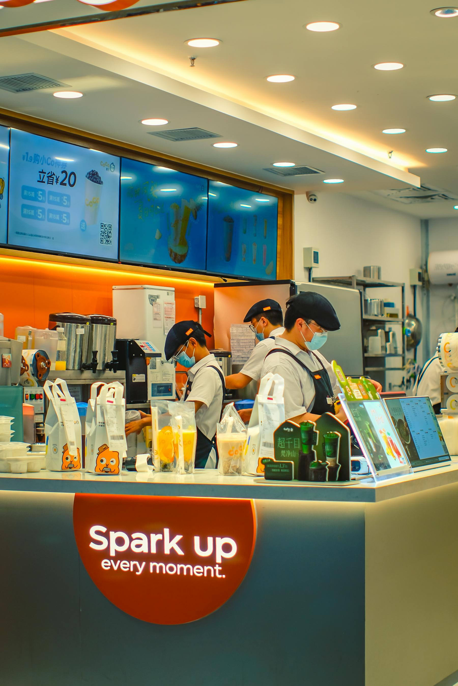
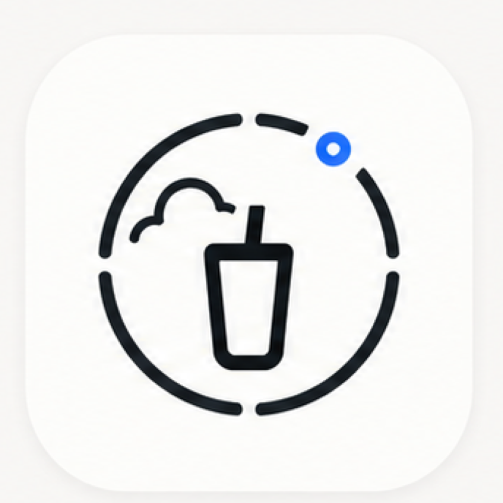
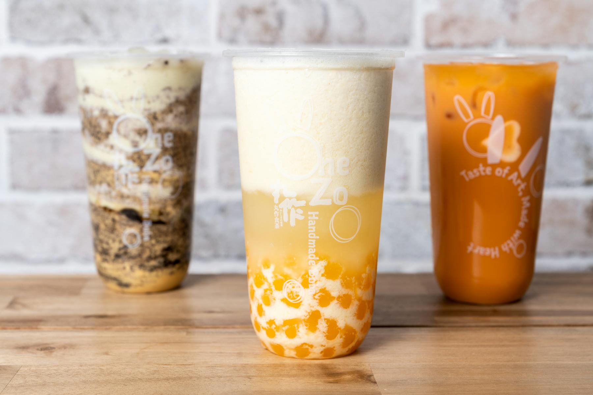
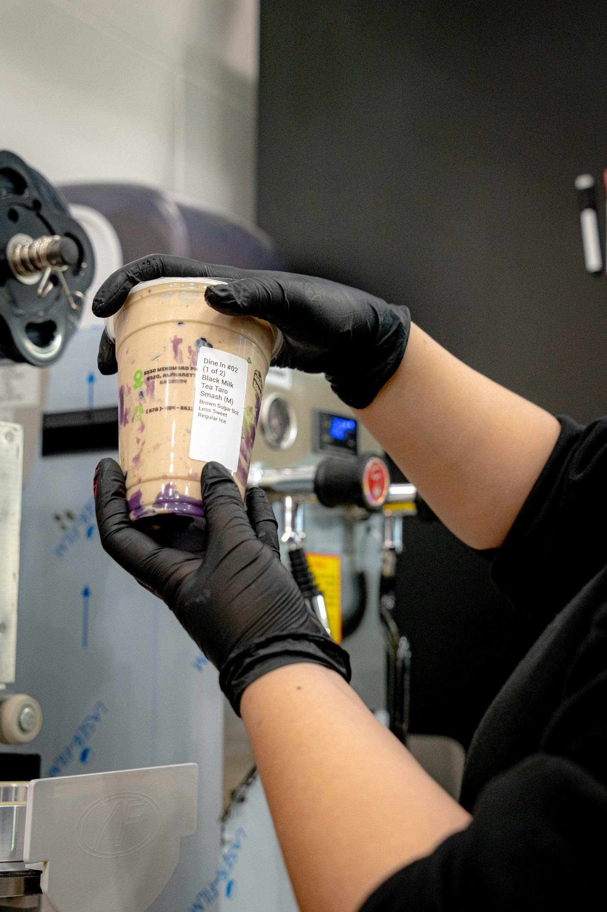

Rain day
Shift spend toward delivery-platform acquisition.
When rain changes ordering behavior, the plan can move budget toward delivery-platform first orders, retargeting, or platform-funded promotions.

Online delivery campaign planning
Weather-aware campaign planning
For bubble tea and beverage brands selling through online delivery platforms, Campaign Advisor turns weather, delivery campaign performance, and your P-ROAS/CAC target into a human-approved top 2 plan.
Where it gets used
Each day, a growth or delivery-channel manager can decide which online platform campaign to run before budget is wasted.

Rain day
When rain changes ordering behavior, the plan can move budget toward delivery-platform first orders, retargeting, or platform-funded promotions.

Hot day
On warm days, the product can recommend margin-aware delivery offers instead of over-discounting natural beverage demand.

Platform reality
The system ranks delivery-platform campaign types, then lets the operator approve the final choice before launch.
Recommended plan
Optimization target
P-ROASP-ROAS = profit return on ad spend. Higher means each ad dollar creates more profit.
CACCAC = customer acquisition cost. Lower means cheaper new-customer conversion.
Recommended output
This week's top campaign
Why it is credible
This web demo uses transparent sample coefficients so the logic is inspectable. In production, the same interface would update coefficients from live delivery-platform orders, campaign spend, conversions, payout, and local weather.
A pilot can compare campaign logic against a recognizable U.S. bubble tea landscape. Names below are a sample competitive set, not partner or official performance data.
Daily plan
The weekly plan is the default. Daily ranking shows where weather shifts the expected value.
Explainability
One additive model scores every day x campaign pair. Demo coefficients are fixed; production coefficients can refresh from live delivery-platform performance.
Y_metric(day, campaign) = beta_0 + beta_campaign + beta_temp * (avg_temp_F - 68°F) + beta_rain * rain% + beta_wind * wind_mph